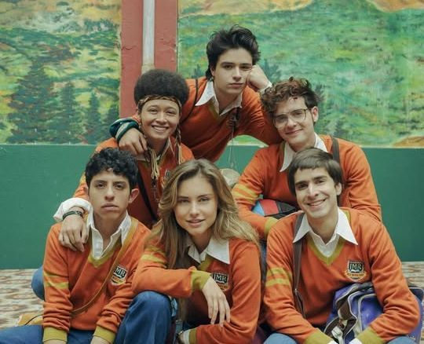
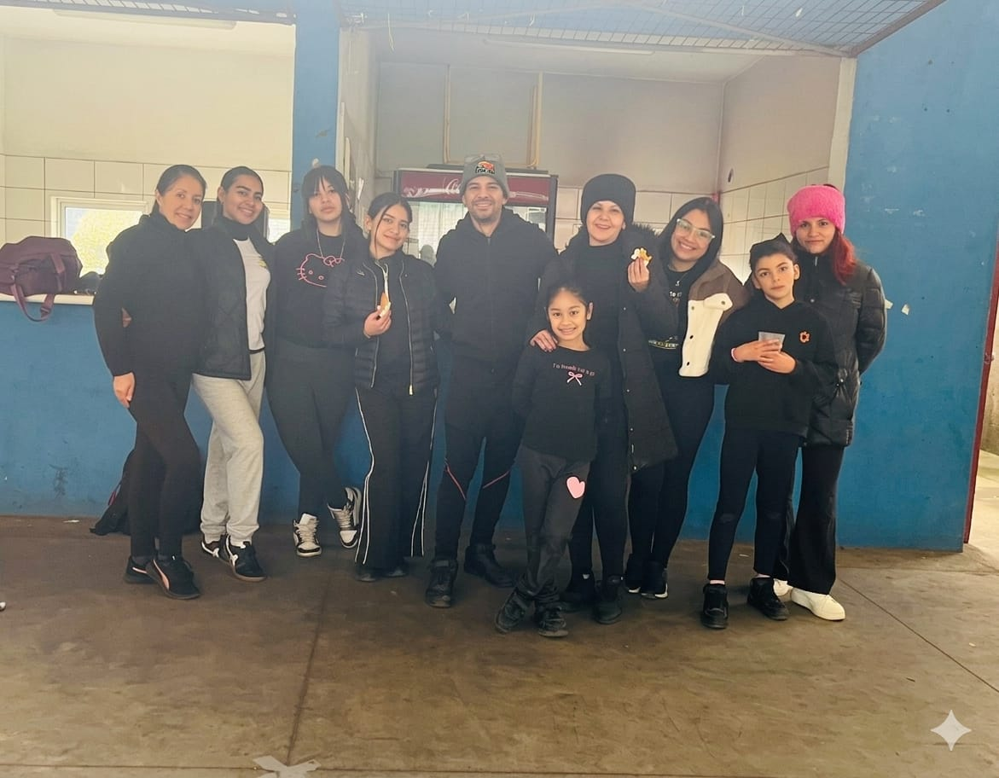
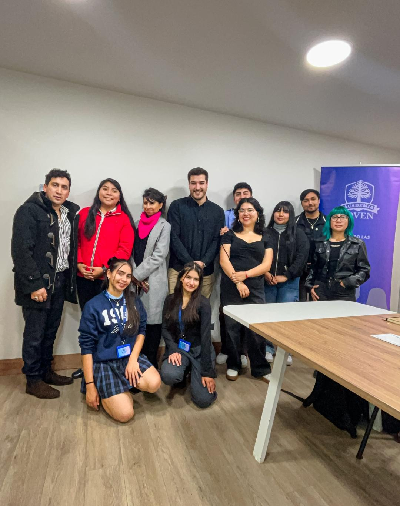
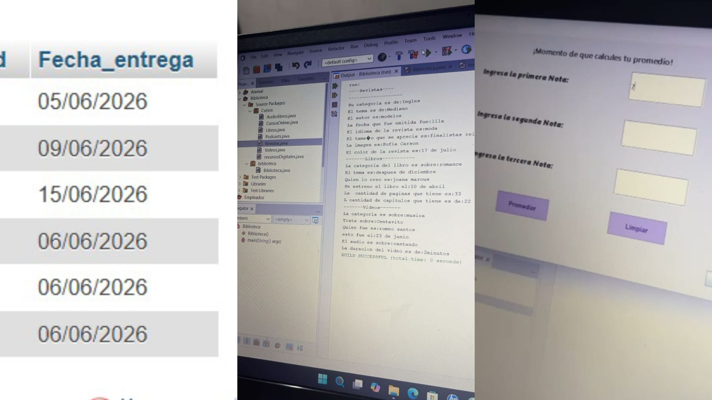
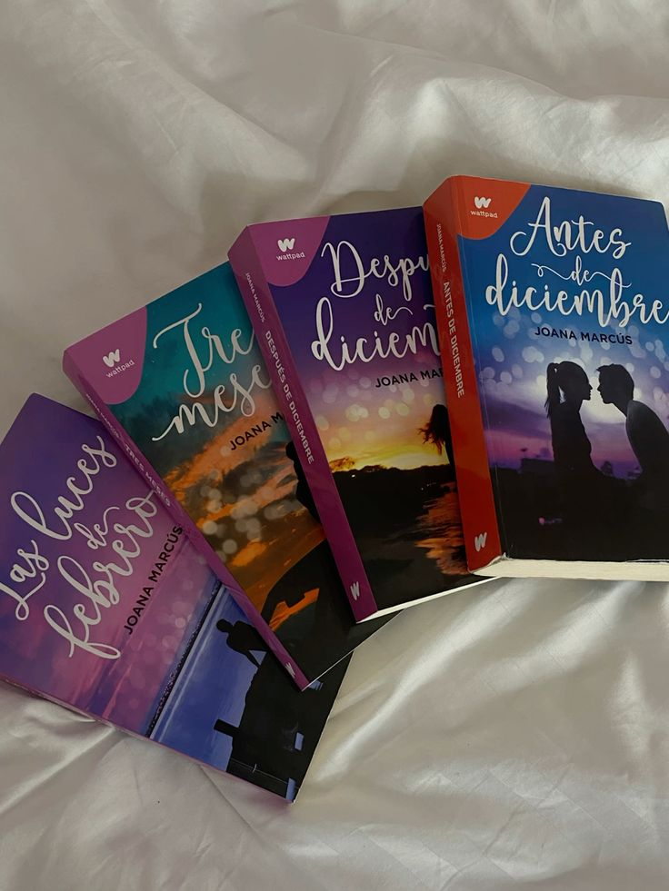

La verdad es mi primera vez haciendo un blog, espero sea de su agrado💌
Quisiera contarles un poco de quien soy
Soy Valeria Valentina Castillo Camero, Tengo 17 años de Edad, Actualmente estudiando en la especialidad de programacion, mi hobbie favorito es pasar tiempo conmigo misma, me agrada leer, bailar, el voley y estudiar y sobretodo mejorar mi crecimiento personal y academico
La primera vez
En esta serie pude descubrir el caracter que uno pueda tener en distintas situaciones y que lo esencial es la comunicación, fue una serie significativa en mi vida que la volveria a ver mil veces.
También aporta mucho lo que es la literatura, dando a conocer por capítulo presentando un libro relacionado a los contecimientos.
la verdad que sin esta grandiosa serie no fuera entendido varios comportamientos de las personas o sentido de ellos y ademas que estaba bien no saberlo todo o saber lo que quieres, somos jovenes y la vida esta hecha para vivirla, Disfrutarla.
Además que es algo que fue esencial para mi por los momentos que viví.

Renacer Venezolano
Siempre me a encantado bailar y siento que es un Arte una disciplina que se construye con el pasar del tiempo ahora que inicie en la academia el profesor menciona que al momento de bailar te cambias la mentalidad tu ya no eres valeria sino que eres rihanna de ese modo lo das todo, tambien mencionaba de que ahora eres bailarina, si estoy aqui es por algo.
El dia Miercoles 03 de junio inicie en renacer venezolano, no solo sera floclor sino que la idea es que sepamos gran variedad de baile como bailarinas integras completamente.
Es una agrupación que ya estaba hace 8 años pero volvió a iniciar como una Academia con personalidad juridica ante la ley.
Estos 5 días que he tenido de ensayo me he sentido mejor, tanto mentalmente como en la agilidad y movimiento. Habia estado abrumada con tantas cosas y siento que los ensayos me han ayudado bastante a no olvidarlo sino a vivir con ello. aparte de ello se que con perseverancia y consistencia lograre ser esa bailarina que se presente en todo lugar, llevando el arte en la sangre.

Academia Joven
Participo en la academia Joven que es una organizacion que busca fortalecer a las juventudes de la Araucania, entregandoles herramientas para su desarrollo tanto academico como personal en su vida diaria.
Ya es una Academia ante la ley, debido a que se logro adquirir la personalidad juridica, teniendo mas posiblilidades a beneficios por estar legalizados
se basan en jornadas para las juventudes de la Araucania 100% gratuitas y accesible para todo aquel que desee participar.
Son instancias de encuentro, de liderazgo, de conocerse a uno mismo he ir creciendo.
La verdad que el ser parte de esta organizacion es un privilegio, es mas que uno como jovenes tomamos accion por un bien comun.

Programming
Quisiera contarles mi experiencia en programacion, algo que pensaba que era complicado y super complejo la verdad que mi mente me juegaba demasiado encontra, algo que lo vivo en distintas situaciones.
Queria algo diferente y desafiante, pero no estaba del todo segura por el poco conocimiento que tenia. Ademas si tenia claro unas cosas que no queria estar en una oficina 24/7, no queria estar constante mente en lo mismo lugar sino algo que me apasine o me guste hacer, tenia claro que cosas no queria ser. En lo que llevo a la conclusion de decidir porfin cambiarme ya iniciando el año escolar.
Sabia que es algo nuevo y totalmente diferente pero aun asi segui de pie y con la frente en alto ante cualquier situacion pero puedo decir que personas cercanas me brindaron sus palabras y apoyo a ayudarme en este gran desafio Los profes de la especialidad grandes personas que siempre estaran presentes en mi vida. si fue complicado al principio y frustante, digo que son cosas por las que debia aprender. El estar en la Especialidad de programacion me ayudo a complementar las habilidades que sabia, y a tener mas conocimientos y descubrir distintas cosas nuevas que siento que las hago con normalidad.
Ahora ya mitad de semestre que llevo estudiandolo, se que no soy perfecta pero se que estoy dispuesta a aprender de todo, pero programacion me enseño muchas cosas como la secuencias de algoritmos que se viven dia a dia, al tu organizarte.
El tener paciencia y pensar criticamente al desarrollar algun proyecto, codigo, trabajo o lo mismo que te piden es muy esencial ejercitando tu Logica. Siento que es algo que cualquier persona podria aprenderlo si esta dispuesto.
En estas cirscuntascias puedo decir, que fue una buena decision todavia esto no acaba sino que es el comienzo de algo maravilloso. Puedo estar segura que no fue una mala decision sino que empece con dudas y ahora estoy mas alineada y llendo por el camino coomo cualquier estudiante que estudio la programacion un año antes se que me falta informacion de distintos temas pero en el camino me ira quedando claro.
Se que si tienes algo en mente o alguna oportunidad que se presente no la desaproveches, es una señal que dios te puso en el camino que esta en tu destino. ve con todo y obviamente con Toda la ACTITUD!!

Literatura
Me a interesado mucho la lectura, la he dejado estos dias por cosas que debo hacer durante el dia pero deseo seguir con la lectura y lo impresionante que te atrapa la incertidumbre por seguir la lectura,
Me encanta leer historias de romance, Conocimiento, Articulos o novelas son tan interesantes que te capta la atencion al instante
Cabe recalcar que la lectura es fundamental en la vida, favoreciendo tu vocabulario y conocimiento.
Es ensencial mantener el habito de leer, el sentido de tomar un libro asi sea leer 15 minutos pero un habito, que te aporta mucho en tu crecimiento como persona.

Contactemonos!!
Si te agrado mi contenido o conectaste con algun tema que mencione. Puedes escribirme a mi o seguirme en mis redes.💫
Encuentrame en:
Correo: vcastilloc.alu@insucotsa.cl Celular: 926032761 Red social: Ig vvalwtx